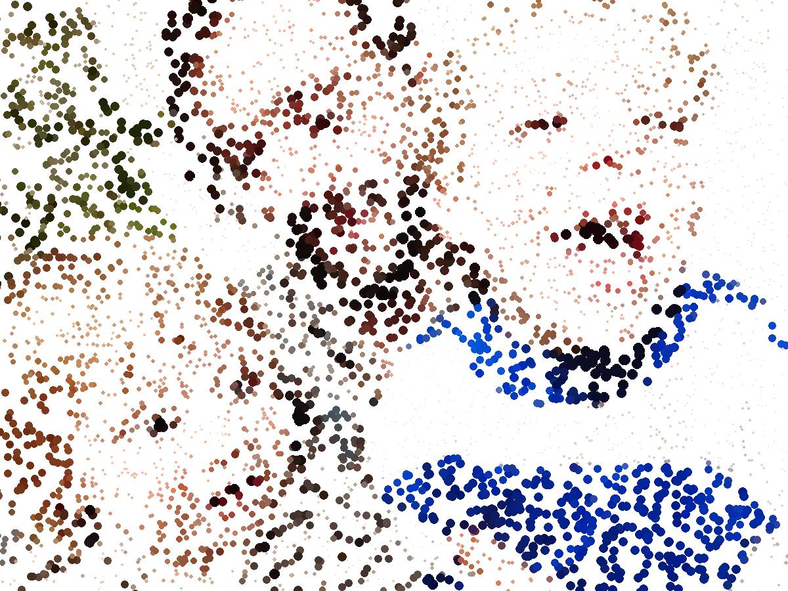

Jesses website voor de KUNSD
Welkom bij de kunsdcollectie van Jesse Metz.
Kunsd is generatieve kunst gemaakt met zelfgeschreven algoritmes. Ik gebruik Python om foto's om te zetten in nieuwe visuele werelden van stippen, segmenten, patronen en kleuren. Op deze website kun je mijn werk bekijken én zelf experimenteren.
